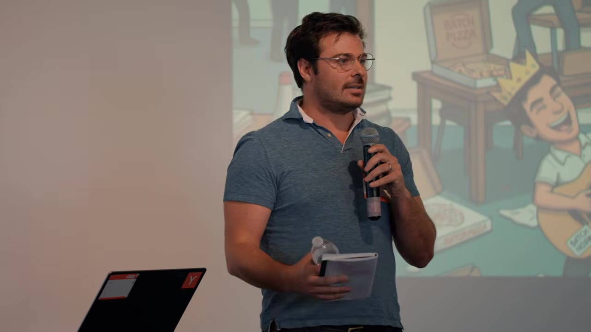
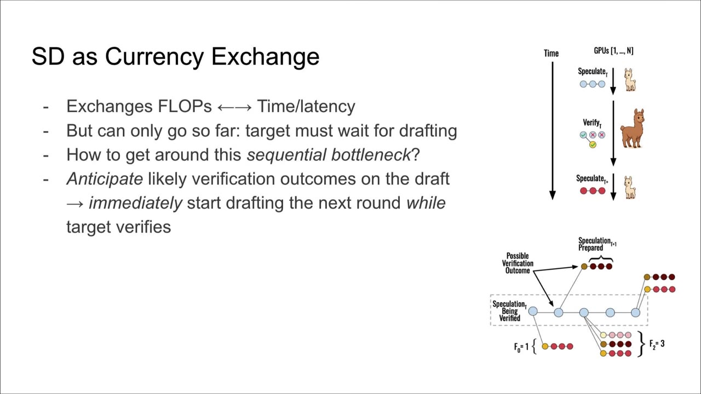
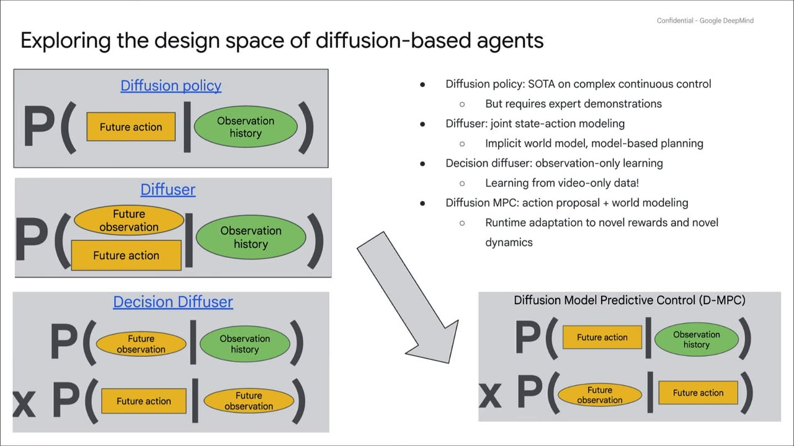
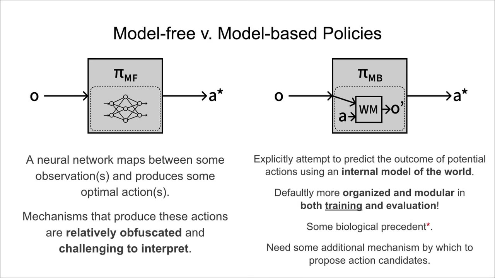
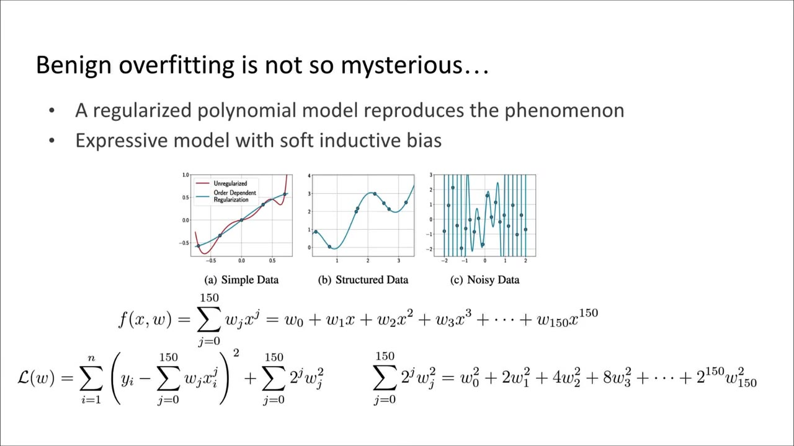
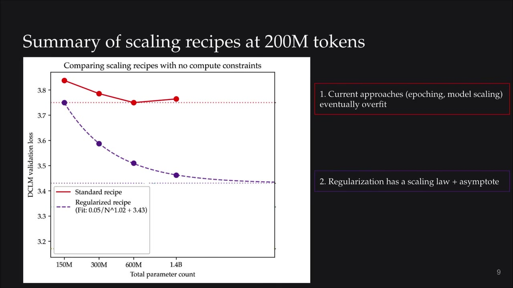

The first YC Paper Club packs five short paper talks into an hour — speculative speculative decoding, diffusion model predictive control, LeWorldModel, why deep learning isn't mysterious, and what pre-training looks like when compute is free but data isn't.
Watch on YouTubeThe first YC Paper Club: over a thousand applications, capped at about a hundred people, run out of the Pioneer building in Woodside. The host's pitch is half community, half geography — roughly half the Bay Area's AI talent is down on the Peninsula (Google DeepMind on the corner, Tesla, xAI, Thinking Machines, a wall of Palo Alto startups) and not making the trek into the city for YC. The room skews credentialed: hands stay up through ten thousand citations and past fifty million dollars raised.

Tanishq Kumar (with Tri Dao and Avner May) makes one claim worth keeping: inference is about to stop being a cost-or-convenience lever and start being a capability. If a method's performance scales with how much it thinks, then tokens-per-second is the ceiling on intelligence you can deliver.
Vanilla speculative decoding exchanges flops for latency — a small draft model guesses tokens auto-regressively, the big target model verifies them in one parallel forward pass, and you keep the tokens it would plausibly have generated (plus a free "bonus" token at the rejection point). The bottleneck is the sequential dependency: drafting round t+1 can't start until verification of round t finishes.

The hard part is predicting verification outcomes — a number of accepted tokens plus a bonus token drawn from a vocabulary of tens to hundreds of thousands. The trick: the tokens the draft chose not to sample are exactly the plausible bonus-token candidates, so you decode several guessed sequences in parallel over a shared prefix.
You also get the ability, next time you're at a San Francisco house party, to know in the corner what it takes to sample at 300 tokens per second for Llama 3 70B on four H100s.— Tanishq Kumar
Stannis (Google DeepMind, now co-leading a world-modeling-for-robotics project) presents earlier work on D-MPC. Model predictive control needs two things to work in practice: a dynamics model accurate enough to avoid compounding error, and a planner strong enough to pick good action sequences. D-MPC uses diffusion models for both — multi-step action proposals and multi-step dynamics — which lets the planner stay almost trivially simple and still beat prior approaches.

The factorization between action proposal and dynamics model is what pays off at test time. Keep the action proposal fixed, swap rewards, and the agent exhibits novel behaviors. Break the robot — a walker with a busted left ankle — and you only need to adapt the dynamics model on a little play data to recover most of the performance.
Isaac R. Ward presents LeWorldModel out of Yann LeCun's group — and frames it as a literal billion-dollar question, since LeCun raised $1.03B in March largely to train world models. A world model predicts how a system changes over time: current observation, an action, predicted next observation. Old idea — he digs up a 1990 Sutton flyer describing exactly a modern world model — newly hot.

The core training pain is co-learning a representation of the world and its dynamics, where the optimization landscape is full of trivial-collapse minima ("every state is the same"). Existing methods dodge collapse with explicit heuristics, foundation-model backbones, or privileged data. Ward's honest read: LeWorldModel is "just offering a new kind of trick" — the SIGReg regularizer.
one-dimensional passes over high-dimensional latent data
the distribution looks the same sliced in any direction
each sliced curve should be Gaussian-distributed — cheaply checkable, and a healthy latent space means a non-collapsing world model
Akshay Vegesna (Q Labs) walks through Andrew Gordon Wilson's paper. The setup: scaling models improves generalization, but we have no mechanistic story for why, and people point to overparameterization, benign overfitting, and double descent as evidence we can't understand it at all. Wilson's move is to use classical PAC-Bayes — which bounds test loss by training loss plus a compression term — and argue the bounds only looked vacuous because the compression term was being computed wrong.

On overparameterization: bigger models drive empirical risk down and find more compressible solutions — the volume of flat minima grows exponentially with parameter count, and flat minima compress better than sharp ones. Both terms of the PAC-Bayes bound drop, giving non-vacuous bounds even at billion-parameter scale.
By the no-free-lunch theorem, the only way we get improvements in learning efficiency is through inductive biases.— Akshay Vegesna, on Andrew Gordon Wilson's paper
The takeaway he leaves the room with: if these mysteries are really soft inductive bias plus PAC-Bayes, then finding the right inductive biases is something you can optimize for — and given the sample-efficiency gap between AI and humans, that's a good bet.
Konwoo Kim (with Suhas Kotha, Percy Liang, Tatsu Hashimoto) closes on the question the host says he's obsessed with: intelligence per sample. Pre-training keeps improving — in-context learning, alignment, reasoning — but human text on the internet grows ~3% a year while pre-training compute grows 4–5x a year. So the real regime is: data-constrained, compute-unconstrained. What do you do?

The recipe is to revisit the classical toolkit. Crank weight decay ~30x past compute-optimal and you get a clean power law with an asymptote. Bring back ensembling and it's even more data-efficient — a compute-matched ensemble of small models beats one large model when you're data-bound. Compose the two (the "joint scaling" recipe) and project onto data scaling laws to read off a ~5x data-efficiency win that stays constant out to trillions of tokens.